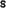
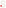
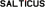

Vizualni jazyk aplikace: uzly spojene metaball hrdly, vlastni skelet pismen, papirova a inkoustova barva, jediny signalni akcent. Navrhy k posouzeni, nic z toho neni zapojeno do UI.
Uzel, krátké hrdlo, uzel, dopad v signalni barve: pivot z hosta na hosta.
Tmava varianta.
Skelet pismene S ze stejnych uzlu jako popisky v aplikaci, konec tahu je signal.

Tmava varianta.

SALTICUS vlastnim pismem z uzlu (stejne jako cisla a popisky v UI); horni uzel pismene I je signal.

Tmava varianta.

Znak v papirove barve na organicke inkoustove plose (rohy jako karty v aplikaci). Nahled 256, 96, 48 a 32 px.